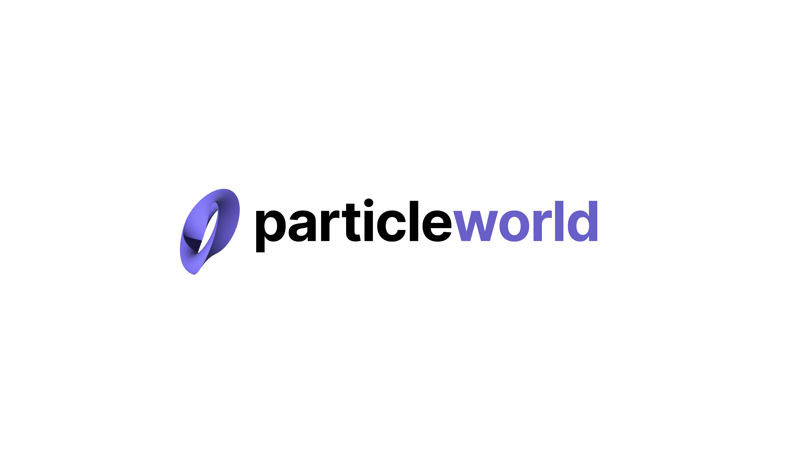

我们的愿景
以 AI 技术驱动硬件智能化，推动人类智能边界的无限延伸：
机器每一次与世界的交互，都成为下一次智能进化的起点。

Extending Physical Intelligence. Indefinitely
以 AI 技术驱动硬件智能化，推动人类智能边界的无限延伸：
机器每一次与世界的交互，都成为下一次智能进化的起点。
见微知界是一家以世界模型和 AI Agent 为核心的物理 AI 公司，致力于成为真实世界中硬件智能化的基础设施。
从高质量多模态数据出发，研发可在端侧高效运行的隐空间世界模型，并结合 Agent Harness、仿真验证与数据闭环，让机器理解真实环境、预测行动后果，在持续交互中学习和进化。
见微知界正在构建面向不同硬件和应用场景的统一智能中枢，推动机器从执行预设指令走向自主理解、规划和行动，让物理 AI 从技术演示走向可验证、可部署和可规模化应用。